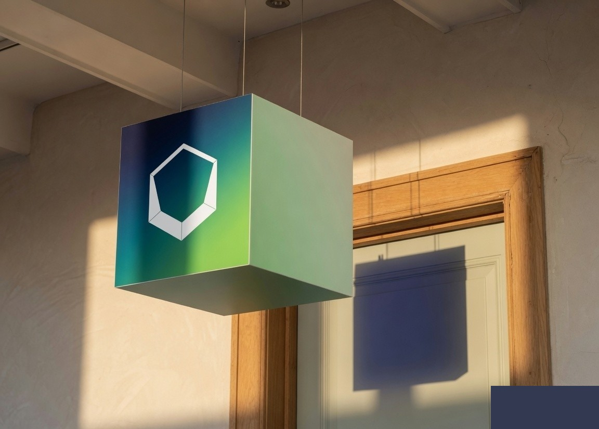
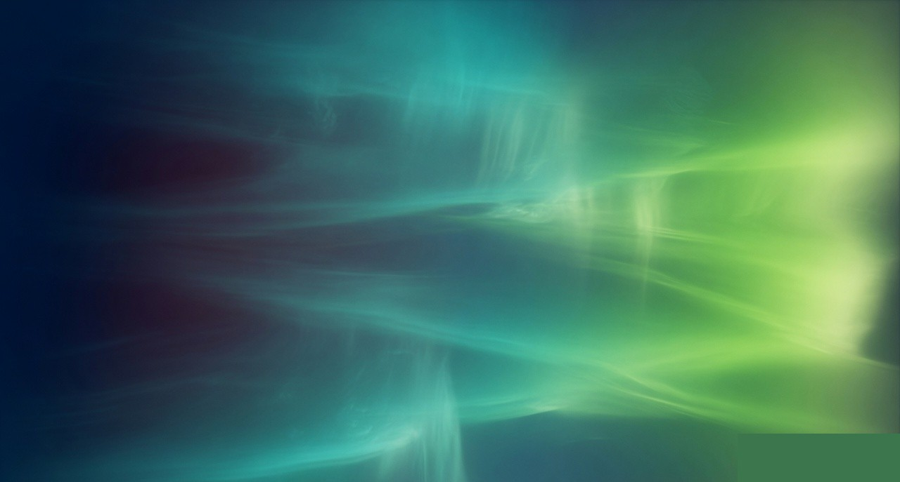

calyx

Brand identity · climate ops
Calyx is a fictional studio for teams that need the certificate of a system — navy shade, teal mass, a lime flare — without a leaf cliché.

Color palette
calyx
for the desk, the floor, the hour you get back
Hold the light. Return the hours.

Open hex cup. Clear space is half the mark height. The wordmark is always lowercase calyx.
Dashed frame = 0.5× mark. Do not crop into it. Minimum 24px digital, 12mm print.
Teal and sea carry the mass. Lime is the flare — one bar, the button, the mark on navy. Never a full-page lime.
#2A4D4F#2F7A67#7AC216#03162C#C5C7C0#F3F4F1#B8B9C0Manrope for the word and the page. IBM Plex Mono for hex, URLs, and units.
Aurora is the only color field. People are black-and-white, brim-shadowed, still. Signs live in real rooms with hard sun.
One mark, three lockups, the aurora as photography. Everything else is noise.